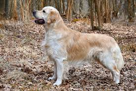

|
Home
|
| Sr.No | Dogs Name | Dogs Images | About |
|---|
| 1 | German Shepherd |  | German Shepard got originated from Germany. This is a new breed of dog that originated in the year 1899. These are called as working dogs that are developed for herding sheep. A German dog has a lot of strength, obedient, intelligent, and very well trained. It is called the second-most popular breed of dog in the United States and fourth-most popular in the United Kingdom.
The breed height starts at 60-65 cm for males, and for females, height was 55-60 cm. They mostly observe in tan/black and red/black. They have a double coat. The outer layer sheds all around, and the thick undercoat is very dense. The life span of the German Shepard is 10.5 years. |
| 2 | Bull Dog | | The country of origin of a bulldog is from England and the United Kingdom. Bulldogs are even called British Bulldog and English bulldog. The average life span of a bulldog is 07 to 10 years. They have tiny nasal cavities and are sensitive to heat. Its height is about 12-16 inches. The weight of males ranges from 53-55 pounds and females 49-51 pounds. These types of dogs are grown as pets. They need exercise, like other dogs. |
| 3 | Golen Retriever |  | The golden retriever is originated from Scotland, United Kingdom, and England. It is very reliable, trustworthy, kind, and intelligent. Its height is for females varies from 55-57cm and male 58-61cm. Weight of male 29.5-34 kg and for females 25-32 kg. These are used as guide dogs. The life span is about 11-12 years. |
| 4 | Poodle | | These are mostly seen in France and Germany. It is very active, alert, intelligent, faithful, and even trained. Height ranges from 35-45cm. It is a water type of dog. Poodles worn Best in the show in 1966 and 1982 and also awarded. These types of pet dogs are available in multiple colors. The life span is about 12-15 years. |
| 5 | Shih Tzu | | It got originated in china. Other names are Chinese Lion Dog and Chrysanthemum Dog. They are litter in size up to 1-8. Weight for both females and males varies from 8.8-16 lbs. Height is also the same for both ranges from 7.9-11 inches. It is available in some colors like brindle red, gold, etc. These are playful, outgoing, loyal, and gentle. The life span of Shi is 10-16 years. |
| 6 | Pug Dog | | These are originated in China, and when migrated to Europe in the sixteenth century, it was well popularized. It was developed as a passion by Queen Victoria in the 19th century. Likewise, it was passed to the royal family. These types of dogs are strong and aggressive and suitable to grow at houses. These have a lazy nature. Its height is 30cm. The life span is of 12-15 years. |
| 7 | English Mastiff | | These dogs breed are originated from England. It is even called as Mastiff or Old English Ma tiff. Its coat is beautiful and smooth. These are calm, dignified, affectionate, courageous, and protective. Height varies between 70-91cm for both females and males. The weight of males is higher than females. The life span is about 10-12 years. |
| 8 | Border Collie | | Border Collie is developed for herding livestock of sheep at boarders. These are acrobatic, energetic, athletic, and smart. These are well known as a Scottish sheepdog. Death occurs due to cancer, old age, and cerebral vascular afflictions. On average, the life span is of 13-16 years. Size of the male in height 48-56cm and weighs about 13.6-20.4kg. In terms of female height is 46-53cm, and weight is 12.2-19 kg. |
| 9 | English Cooker Spaniel | | It was originated in England. Also known as Cocker spaniel. It even called by pet names like Cocker and Cocker spaniel. It is an active sporting dog with good-natured. Cockers can be along with children, people, and other pets and dogs. This is not best suited for the backyard alone. Height varies between 38-43cm and in weight about 13-16 kg for the male. In female weight ranges between 12-15 kg and height of 36-41cm. The life span is of 12-15 years. |
| 10 | Pomeranian | | Pomeranian is named after region Pomeranian in central Europe. It is also called as Deutscher Spitz. Pet names are pompom, pom, and tumbleweed. These became popular by royal owners since the 18th century. It is a breed dog of spitz type. It is in a petite size. Its height of about 20cm and mass of body ranges between 1.9-3.5 kg. This type of dog breed is very playful, active, intelligent, extroverted, sociable, and friendly. The life span is of 12-16 years. |
| 11 | Australian Cattle Dog | | As the name suggests, it got originated in Australia. It has multiple names like blue heeler, red heeler, cattle dog, and Queensland heeler. It weighs about 15-22 kg for both males and females. Height varies from 46-51cm for males and 43-48cm for females. It has a short and double coat. And It can be seen in blue and red varieties of colors. It is known as a “wash and wear” dog, and also groomed and trained. The life span is of 11.7 years. |
| 12 | Bull Terrier | | It got originated from England. Other names are Bully Gladiator and English Bull Terrier. These are both independent and stubborn. Its height is 45-55cm and weighs 22-38 kg for the male. Its coat is short and dense. It is variable in multiple colors like white, fawn brindle and white, etc. These may injure or kill other pet animals. The life span of this dog lies in between 10-15 years. |
| 13 | Boston Terrier | | Boston terrier got originated from the United States. Other names are Boston Bull, Boston Bull Terrier, Boxwood, and American Gentlemen. These are short and compact with a short tail and erect ears. These are ranked as the 23rd most popular pure-breed in the United States in 2012 and 2013. Its coat is quick, slick, and smooth. Its height is 9-15 inches, and litter size is about 1-6 puppies. Life span is of 11-13 Years. |
| 14 | Chow Chow | | This breed got originated in china and now known as “Fluffy Lion-dog.” Other names are Tang Quan and Dog of the Tang Quan. These dogs are found as guardians in front of Buddhist temples and places. These are mostly kept as pets. These are loyal, independent, quiet, and reserved. Its coat will be thick and coarse. Height is typical for both males and females that are 17- 20 inches. Weight for the male is 55-70 pounds and for females 45-60 pounds. Its litter size is 3-6. Life span varies from 9-15 years. |
| 15 | NewfoundLand | | Newfoundland got originated from England. It is a large working dog. These are found in black, brown, grey, and land seer. These dogs worked for fishers. These are well known for tremendous strength, giant size, and loyalty. Nicknames are Newf and Newfie. Height and weight for males are 75cm and 60-70 kg. Height and weight for females are 68cm and 45-55 kg. Its coat is thick and straight. The size of the litter is 4-12 pups. This dog type is available in all colors like brown, black and beige, etc. The life span is of 8-12 years. |
| 16 | Basset Hound | | It got originated from France and Great Britain. This is a short-legged breed dog of the hound family. Its nicknames are basset and hush puppies. The weight of males is 55-75 pounds and females 45-65 pounds. The height of males is 12-15 inches and female 11-14 inches. Their sense works very well for a bloodhound. These are usually bicolours and tricolors. Its coat is smooth, close, and smooth. Litter size is 6-8 puppies. Life span is of about 11-12 years. These are devoted, tenacious, gentle, affectionate, and sweet-tempered. |
| 17 | English Spring Spaniel | | English springer spaniel belongs to the family of Spaniel. It is used for flushing and retrieving game. It’s very a very affectionate, excitable breed. And It is very alert, active, intelligent, cheerful, and attentive. The weight of females is 18.1-22.7 kg, and the male weight is 20.4-25 kg. The height of a male is 48-56cm, and the female height is 46-51cm. The life span of this dog is 12-14 years. |
| 18 | Alaskan Malamute | | It got originated from the United States Alaska. It is a large breed of domestic dog. Its haul is very freight because of this strength and endurance. The weight of the male is 55 kg, and the female is 38 kg. The height of the female is 61cm and male 70cm. Its coat is thicker and double coat with plush undercoat. It is generally seen in grey, sable, black, or red and white. The size of a litter is 4-10 puppies. The life span of this breed dog is up to 16 years. |
| 19 | St. Bernard | | It got originated from Italy and Switzerland. Other names are St.Bernhardshund, Alpine Mastiff, and Bernhardiner. It has a nickname saint. The average weight of breed lies between 65-120 kg and height is 70-90 cm. The coat is smoother and rough. It is gentle, calm, and friendly. The life span is of about 8-10 years. |
| 20 | Miniature Schnauzre | | This type of dog belongs to a small dog and got originated from Germany. Another name is Zwergschnauzer. Its weight is about 11-18 for males and 10-15 for females. Miniature Schnauzer height is 14 inches for a male and 13 inches for a female. Its coat is harsh and wiry when and stripped. It exists in black, silver, white, etc. Litter size is 3-8 pups. The life span is of 12-14 years. |
|